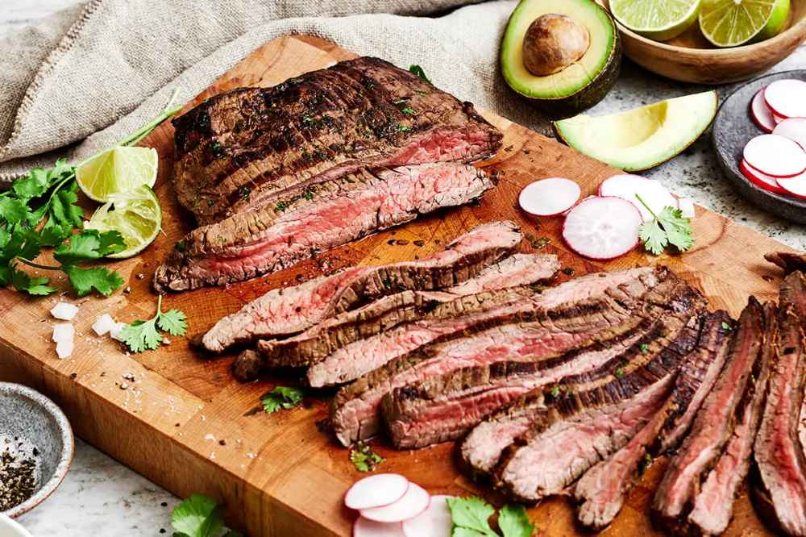

Carne Asada Recipe

Description
- Calories: 276 kcal
- Cooking Time: 2 hours 10 minutes
- Serving Amount: 6 servings
Delicious, flavorful meat that is worth the wait! This is proof that a few simple ingredients make for the most flavorful meat.
Ingredients
- 1 1/2 lbs flank steak
- 1/3 cup olive oil
- 3 limes, juiced -- about 6 tablespoons juice/li>
- 4 garlic cloves, minced
- 1/2 cup fresh cilantro, chopped
- 1 teaspoon cumin powder
- 1/2 teaspoon chili powder
- salt and pepper, to taste
Steps
- Whisk all of the oil, lime juice, garlic, cilantro, cumin, chili powder, salt, and pepper together in a bowl.
- Add the steak to a glass or non-reactive baking tray and pour the marinade on top. Ensure both side of the steak are well coasted, cover the baking tray with plastic wrap and marinate for 1 to 4 hours. Alternatively, you could marinate in a plastic bag.
- Heat a grill on medium-high heat. Add the carne asada and cook for 5 to 7 minutes on each side. Remove the steak to a cutting board and let it rest for another 5 minutes.
- Using a sharp knife, slice the carne asada at an angle against the grain. From there, you can further chop the carne asada into smaller pieces, if you'd like.